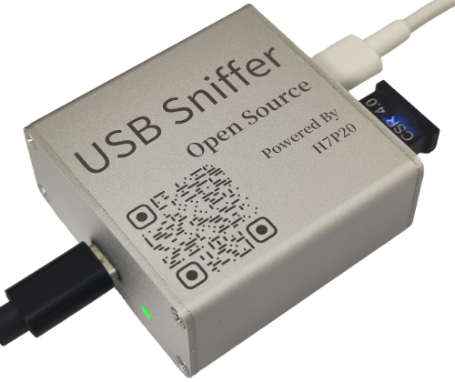

USB Sniffer H7P20 快速上手
一、简介
铝合金外壳 |
PCBA |
|---|---|
|
|


本产品为USB协议分析工具，可配合 Wireshark 进行实时协议解析，支持USB低速、USB全速及USB高速。
软硬件基于 ataradov.usb-sniffer 复刻，并继续以BSD-3-Clause license协议开源。核心变动是将其Lattice LCMXO2替换为京微齐力 H7P20，高速比较器替换为GSV332-MR。
所有生产设计料全部开源，如下：
二、快速上手
2.1 资源整合包
2.2 软件安装
方法一：解包即用
解压整合包中的
WiresharkPortable64_4.4.9.paf.zip文件夹
WiresharkPortable64_4.4.9.paf下的WiresharkPortable64.exe即为捕获软件
方法二：逐步安装
安装整合包中的
Wireshark-4.4.9-x64.exe，或从 Wireshark官网 下载最新版安装启动
Wireshark，点击帮助-关于Wireshark-文件夹，打开Global Extcap path文件夹，将整合包中的usb_sniffer_win.exe拷贝至此文件夹中，该插件亦可通过 源码 自行构建重启
Wireshark，确保插件被载入
2.3 Wireshark捕获
接线示例，图中黑线接 |
|---|
 |
使用附件中的较长的编织线连接
Wireshark主机推荐主板上的USB3.0母口与分析仪带灯一侧TYPE-C口使用附件中较短的屏蔽线连接
采集对象母口与分析仪无灯一侧TYPE-C口启动
Wireshark，在捕获中会出现一个USB Sniffer，点击其齿轮，根据目标设备速度选择采集速度，推荐勾选Fold empty frames(折叠空帧)，点击开始连接
采集对象设备与A母。正常情况下，USB通讯立即开始，Wireshark中会显示捕获到的数据
2.4 Wireshark分析示例
高速U盘高速Vllink Basic2调试器全速CSR 4.0 蓝牙狗全速游戏手柄
2.5 Wireshark分析-以高速U盘为例
默认会显示从底层到高层所有数据
在
应用显示过滤器...或快捷键Ctrl-/中，输入如下表规则，可以更直观的观察所需数据Wireshark支持非常多的高层次协议解析，如usbhid、bluetooth等，在某些场景极具优势
过滤规则 |
过滤规则 |
过滤规则 |
过滤规则 |
|---|---|---|---|
|
|
|


三、常见问题
问：捕获时能否自动识别速度，无需提前选定速度模式
答：原作者未实现此项功能，本产品也不支持
问：能否支持USB PACKET VIEW
答：不支持实时捕获，但可以导入分析，详见此网站第九章hellofpga.com_usb-sniffer
四、二次开发
重要提示： 二次开发不提供技术支持，且开发过程中的焊接、烧录等行为会使得产品无法享受质保服务。
4.1 CY7C68013A部分
如何进入Boot：短接PCB上CY7C68013A芯片旁的
Boot与VCC，再连接电脑，即可进行二次编程
4.2 H7P20部分
五、交流群
QQ群：635683631